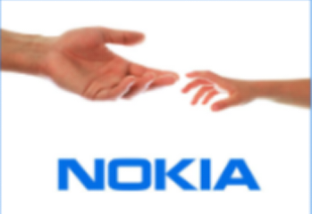
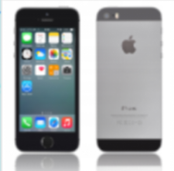

The journey of mobile phones began in the mid-20th century with early wireless communication systems. In 1973, Martin Cooper of Motorola made history by making the first handheld mobile phone call using the DynaTac prototype. These devices were bulky, expensive, and had limited functionality, but they marked the start of a new era in communication technology. Over time, innovations in design and technology paved the way for mobile phones to become more practical and accessible. This breakthrough inspired further research and development in the telecommunications industry. It also demonstrated the potential for mobile devices to revolutionize human interaction. The invention of mobile phones was a turning point in how people communicated across distances.
 In the 1980s and 1990s, mobile phone technology advanced with the introduction of 1G and 2G networks. Analog systems transitioned to digital, improving voice clarity and enabling services like SMS. Devices became smaller, cheaper, and more user-friendly, transforming phones from niche business tools into everyday communication devices. Companies like Nokia and Motorola dominated this period, with iconic models such as the Nokia 5110 capturing the public's imagination. The era also saw significant growth in mobile network coverage, connecting more people worldwide. This progress marked the beginning of mobile phones becoming indispensable in daily life.
 By the 2000s, the arrival of 3G networks and smartphones revolutionized the industry. These devices combined internet access, multimedia capabilities, and user-friendly interfaces. Apple's iPhone, launched in 2007, set a new standard for mobile technology with its sleek design and app ecosystem. Android quickly followed, providing a competitive and customizable alternative. Today, with the advent of 4G and 5G networks, mobile phones continue to evolve, shaping global communication and innovation. The introduction of apps created new opportunities for businesses and developers. Today, with the advent of 4G and 5G networks, mobile phones continue to evolve, shaping global communication and innovation while becoming more integral to modern lifestyles.
About mobile phones: